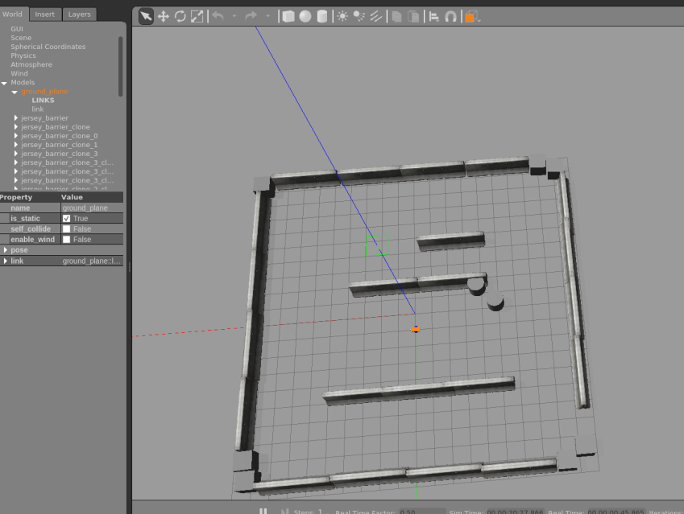
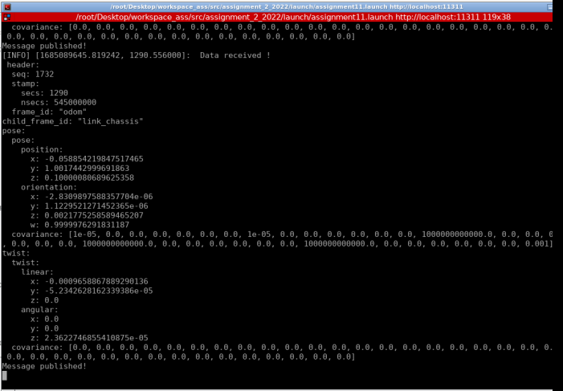
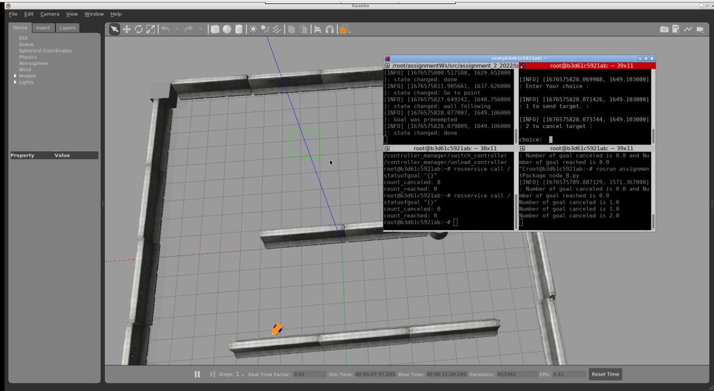

Welcome to Assignment Docum’s documentation!
This is my documentation of RT1 assignment 2 solution, it contains four nodes with specific functionalities for each node:
1- The first ROS node allows a user to input a target position for a robot to navigate to and he can also cancel the operation and stop the robot an reassign new target distination, it was implemented using an action client.
2- A node that publishes the robot’s position and velocity as a custom message using values from a topic.
3- A service node that, when activated, prints the number of goals that have been reached and cancelled.
4- A node that subscribes to the robot’s position and velocity using the custom message and prints the distance of the robot from the target and the robot’s average speed. A parameter will be used to set the frequency of publishing the information.
Enjoy reading my documentation, I hope everything will be clear, don’t hesitate to contact me in case of any doubt.
Indices and tables
Assignment documentation!
This is the documentation of the assignment package!
Action client node Module
This ROS node allows a user to input a target position for a robot to navigate to and he can also cancel the operation and stop the robot an reassign new target distination, it was implemented using an action client.
- Functions:
cancel(): Cancels the target and publishes the cancellation event.
target(): Sends the robot to the target position.
- Usage:
User can choose to send a target position or cancel an existing target.
User interface prompts for input and executes the corresponding function.
—
- Global Variables:
- clientactionlib.SimpleActionClient
An instance of the action client connecting to the ‘/reaching_goal’ topic.
- scripts.node_A1.cancel()[source]
This functions is called if the user choose to cancel the target, and it cancel the goal for the action client client Also it publishes the goal cancelation event.
- scripts.node_A1.main()[source]
This is our user interface function. A simple user interface the asks to choose between two options eIther sending the robot to a target or canceling the target, depending on the choice of the user the program will excute either cancel() or target() functions.
- scripts.node_A1.target()[source]
This functions is called if the user choose a target position to reach, after the user interface if the user types 1 which means that he wants to send a target this functions is excutes, it starts by asking the user to enter the desired x and y positions, then it define a goal which in our case is called goal. it sets the goals positions (x and y) to the one entered by the user and finally it sends the goal.
Publisher node_A2 Module
It is a node that publishes the robot’s current position and velocity as a custom message by subscribing to the /odom topic.
Functions:
subscriber_callback(data): Callback function executed when a message is received on the /odom topic.
Usage:
The subscriber_callback function creates a custom message of type my_msg and fills it with the current position and velocity obtained from the received data.
The message is then published on the position_and_velocity topic, and the received data is logged.
To run the node, initialize the ROS node with the name node_A2 and let it subscribe to the /odom topic.
Subscribes to:
/odom (message type: nav_msgs/Odometry)
- Topics Published:
position_and_velocity: The node publishes the custom message my_msg on this topic.
- scripts.node_A2.main()[source]
Main entry point of the node.
Initializes the ROS node with the name node_A2.
Creates a subscriber that subscribes to the /odom topic with the message type Odometry.
Keeps the node running by calling rospy.spin().
- scripts.node_A2.subscriber_callback(data)[source]
Callback function executed when a message is received on the “/odom” topic.
It creates a custom message of type my_msg and fills it with the current positions and velocities obtained from the received data. Then, it logs the received data, declares a publisher that publishes the custom message on the “position_and_velocity” topic, publishes the message, and prints “Message published!” to the console.
The service node Module
This node subscribes to the /reaching_goal/result topic to monitor the status of goals and provides a service called statuofgoal to retrieve the number of reached and canceled goals.
- Subscribes to:
/reaching_goal/result: Topic to receive status updates on goals.
- Service:
statuofgoal: Service to retrieve the number of reached and canceled goals.
- Functions:
callback1_sub(msg): Callback function executed when a message is received on the /reaching_goal/result_callback topic.
callback2_srv(req): Callback function for the statuofgoal service.
- Usage:
Run the node and it will subscribe to the /reaching_goal/result_callback topic and provide the statuofgoal service.
The callback1_sub function counts the number of canceled and reached goals based on the received status updates.
The callback2_srv function responds to the statuofgoal service request by printing the number of canceled and reached goals and returning the response.
- Variables:
- count_canceledint
Count of canceled goals.
- count_reachedint
Count of reached goals.
- scripts.node_B.callback1_sub(msg)[source]
Callback function that checks the state of the goal (reached or canceled) and increments the corresponding count.
- Args:
msg: Received message containing the status of the goal.
Subscriber node Module
Python module for the Subscriber node (node_C).
This node subscribes to the robot position and velocity using a custom message and prints the distance of the robot from the target and the robot’s average speed after reaching the goal.
Subscribes to:
/position_and_velocity (message type: my_msg)
/reaching_goal/goal (message type: PlanningActionGoal)
/reaching_goal/status (message type: GoalStatusArray)
—
- Global Variables:
- goalPlanningGoal
The goal of the robot obtained from the “/reaching_goal/goal” topic.
- my_msgmy_message
The robot’s position and velocity obtained from the “/position_and_velocity” topic.
- statusint
The status of the robot’s goal obtained from the “/reaching_goal/status” topic.
- tmpint
Temporary variable to store the previous status for comparison.
- startfloat
Start time to calculate the duration.
- startingPosegeometry_msgs.Point
Starting pose of the robot used in distance and speed calculations.
- scripts.node_C.callback(msg)[source]
- Callback function that calculates the distance traveled by the robot as well as the average speed and the duration,
it also prints those information.
- scripts.node_C.callback1(msg)[source]
Callback function that updates the global variable my_msg with the received message of type my_message.
Running the simulation
To start the sumulation create a workspace and clone the packages ( the simulation package and the assignmentpackage), the start by running the command :
roslaunch assignment_2_2022 assignment11.launch
This will lauch the simulation nodes and the nodes node_A2, node_B and node_C: and gives you the following Gazibo interface:
this will also run the publisher node and it will be publishing the robot pose:
Now to run the full simulation with sending target, open a new terminal and run the node_A1, using the commande:
rosrun <packageName> <nodeName>.py
An example of running the everything togheter will give us:
